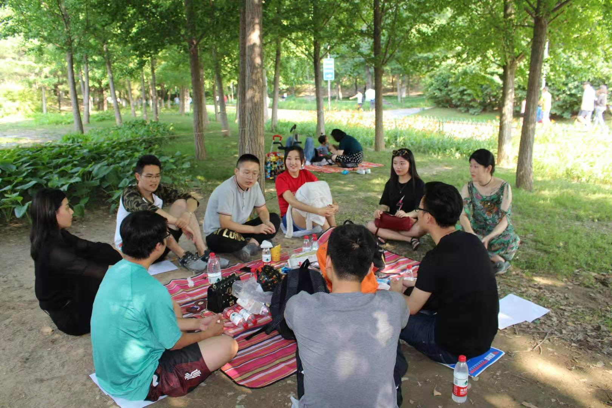
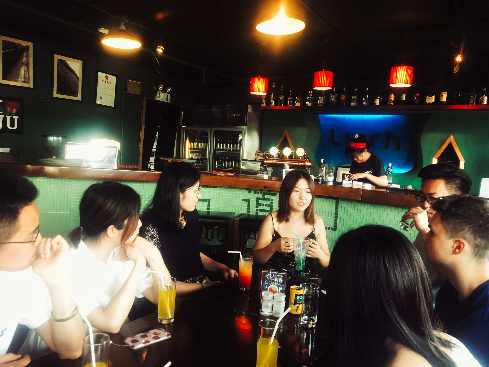

What Are We Doing?
AvocaTalk English Corner helps Chinese to improve their oral English by several sessions.
We have introduction sessions, debate sessions, free talk sessions, and presentation sessions.
Except for improving oral English, we are trying to help people improve their logical minds, expression capacities, organizing capacities and so on.

Why Are We Doing This?
Have you ever felt that when you have to talk to a foreigner, you cannot speak out a word?
Everyone of us have learned English for years, but when being towards a foreigner, we are still weak.
What Happened?
The main reason is that mastering a language is not only about what you have learned, but how often you use it. If we practice English everyday or even once a week, you'll see the difference. And this is what we are doing.

We Are Here. Where Are You?
If you like talking, here is the right place for you.
If you like making friends, here is also the right place.
If you would like to improve your oral English in a comfort environment, come and join us.
If you would like to make a change with me, join our team!
You do not have to step out your comfort zone when practicing your oral English,
because we are just a group of youth who have the same dreams as you!